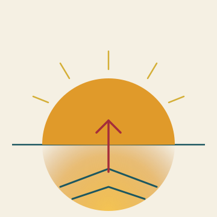

Het Open Vizier · Zukunft
Eine Zeitung über das Denken ohne Scheuklappen

★ ZUKUNFT
Fragen, die über Generationen reichen — Erziehung, Schule, Energie, Regierungen, Industrie. Keine losen Artikel, sondern ein fester Ort, an dem das Denken über die lange Frist gesammelt wird.
★ ERZIEHUNG
Wie wir Kinder formen — jenseits von Bildschirmkultur und pädagogischer Mode.
AKTIV · 4 ARTIKEL★ SCHULE
Was Schulen lehren sollten — jenseits des heutigen Lehrplans.
AKTIV · 5 ARTIKEL★ ENERGIE
Wie Energie erzeugt, verteilt und verarbeitet wird — jenseits fossiler Energie und jenseits subventionierter PV.
AKTIV · 5 ARTIKEL★ REGIERUNGEN
Wie Regierungen anders arbeiten können — pro Land, je nachdem was vor Ort möglich ist.
AKTIV · 24 ARTIKEL★ INDUSTRIE
Wie industrielle Produktion aussieht, wenn wir über CEOs und Berater hinwegsehen.
AKTIV · 12 ARTIKEL★ Was hier erscheinen wird
Diese Kategorie wurde gerade eröffnet. Die ersten Artikel folgen, wenn sie fertig sind — keine Lückenfüller, kein Platzhalter-Text mit Inhalt, der nicht existiert. Was hier erscheint, ist, was hier durchdacht wurde.